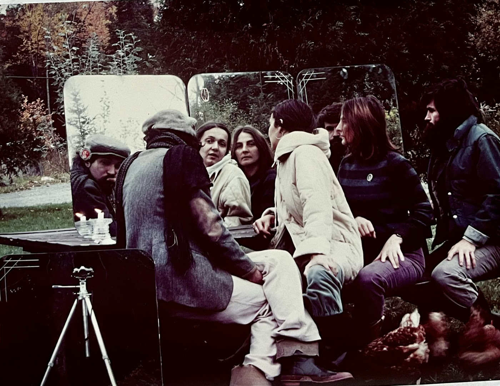

En 1981, avec des amis artistes, nous avons lancé OTO : un réseau de création par la poste. J'ai écrit ce manifeste pour le lancement. C'est un texte de fiction : écrit en 1981, il fait comme si dix ans avaient passé, et il raconte le bilan d'OTO en 1991. Il imaginait des créateurs reliés par des ordinateurs et le téléphone — on n'appelait pas encore ça Internet.
Dans la réalité, OTO postal a vécu deux ans : une dizaine d'envois à une vingtaine de personnes qui interagissaient. Avec nos moyens artisanaux, le projet est devenu trop lourd et s'est éteint. Il n'est jamais devenu le réseau d'ordinateurs rêvé. Ce rêve, je l'ai poursuivi autrement, tout au long de ma carrière : la Télé-université, les hypermédias, Internet.
Le manifeste reprend aussi quelques vers de mon recueil PRé/TEXTES. Les quatre époques du texte sont marquées par des caractères différents, comme dans l'original.
1991, 1991, 1991, 1991, 1991
CECI EST UN TEXTE DE FICTION
1991991991991991991991991991
N.B. Ce texte écrit en 1991, se déroule dans le temps, de 1970 à 1991 ; pour éviter toute équivoque temporelle, nous avons utilisé quatre caractères différents pour démarquer chaque période :
- 1970-1980 — période de gestation
- 1981 — lancement du projet (le réel)
- 1982-1990 — période de fonctionnement (prospective)
- 1991 — présent anticipé (bilan)
1991, après dix ans de fonctionnement d'OTO, il est important et intéressant pour nous tous qui avons créé et fait vivre OTO de revoir le chemin parcouru.
Où en étions-nous, quand le projet a commencé, que cherchions-nous à réaliser, par quelles voies sommes-nous passés pour réaliser ce rêve ? Nos réponses à ces questions devraient dégager les jalons du futur ; inventorier nos acquis pour sauter plus loin et plus haut.
Quelle est la façon qui nous convient le mieux pour nous exprimer, créer, communiquer : vivre ? Cette question que nous nous posions, voilà dix ans, est toujours demeurée le coeur de notre démarche. Donc pas de surprise que nous nous la reposions, en ce jour de notre dixième anniversaire, non par nostalgie mais bien pour améliorer OTO, pour l'assujettir à nos dernières découvertes. Inutile d'insister, mais disons tout de même que nous ne répondons jamais une fois pour toutes à une question et que nous devrons toujours confronter nos réponses avec de nouvelles expériences. Tous sont à la recherche de cet idéal, avec plus ou moins de lucidité et de courage ; espérons que nos imparfaites consciences amalgamées formeront une conscience supérieure pour forcer l'avenir à être de notre côté.
Au temps de rêve des années 1970, nous nous sommes gavé(e)s, nous avons profité des bienfaits de cette période de vaches grasses. Les gens intelligents étaient, alors, florissants ; on vantait leur intelligence et eux la vendaient en échange d'un salaire.
— Mais à quoi sert d'être intelligent, si on ne se sert pas de sa TÊTE ? —
Puis, sans avertissement, la conjoncture s'est modifiée et, comme la cigale, nous nous sommes fait prendre les culottes baissées. Ce qui, hier, faisait notre affaire, nous conduisait, aujourd'hui, dans un cul-de-sac. Il fallait réagir, modifier nos comportements.
Qu'avons-nous fait, puisqu'alors, travailler pour gagner sa vie devenait insuffisant et que, de plus, nous nous sentions capables d'influer sur l'avenir, capables de mettre nos talents à l'épreuve pour changer le monde, tout en vivant pleinement notre quotidien ?
« PENSER » Pendant que nous cherchions des solutions, plusieurs riaient de nous, les idéalistes, les poètes ; les gens ne semblaient pas comprendre qu'avant de réaliser des « affaires pas toutes faites d'avance » il faut chercher, réfléchir ; tout se prépare, il faut y mettre le temps, l'énergie, ce que ne permet pas toujours le travail de 9 à 5 « mais nous n'avons pas le choix »…
Vers 1980, nous avons cru à ce choix possible, nous avons voulu ouvrir de nouveaux sentiers ; nous avons cherché longtemps, élaboré, bâti des tas de projets, jamais réalisés parce que nous mettions la charrue devant les boeufs. Nous construisions des châteaux en Espagne, alors que nous rêvions d'auberges espagnoles. Tout le matériel prenait le dessus sur l'essentiel : NOTRE GOÛT DE CRÉER ET DE LE TRANSMETTRE À D'AUTRES, de le partager. Nos projets nous coûtaient toujours des fortunes, demandaient plein d'organisation. Il nous fallait une forme éclatée, aux possibilités multiples, pouvant facilement s'ouvrir à d'autres initiatives ou à d'autres personnes désireuses de cheminer avec nous.
Notre mode de pensée est prisonnier de celui de notre époque. On nous a enseigné à penser carré, avec des angles pointus ; nous voulions penser plus rondement, sans à-coup, tout en souplesse. Tant que nous avons pensé carré, nos organisations étaient très contraignantes, énergivores, elles ne laissaient plus place à notre créativité quotidienne, celle que nous nous étions bâtie depuis quelques années et que nous défendions contre tous les assauts d'une société productiviste et conformiste.
La création, la marginalisation développent la solitude, d'où le besoin de créer des solidarités, UN COMPAGNONNAGE D'ESPRIT ET DE CONSCIENCE. Des échanges dans tous les sens. Nous devions être les catalyseurs de cette démarche à portes ouvertes. Un échange multidirectionnel, multidisciplinaire, de nos envies de changer le monde, de le transformer.
Combien de fois, durant les années 1970, n'avons-nous pas entendu cette merveilleuse phrase, à la fois pleine d'espoir et de détresse : « C'est drôle comme nous sommes nombreux à penser la même chose mais nous n'arrivons jamais à nous réunir », nous restons tous dans notre coin à ruminer nos idéaux, nos beaux rêves. De la souplesse… de la souplesse d'esprit : il nous faut apprendre à danser dans nos têtes sur notre propre musique ; pas devenir super individualiste, non il faut garder contact avec les autres, tout en affirmant nos caractéristiques propres.
En 1981, lorsqu'enfin 1991OTO est né, ce merveilleux projet tout simple qui tentait de rejoindre un éventail de monde disposé, à différents niveaux, à embarquer dans ce petit trip qui risquait de devenir « ben le fun » à la longue. Une organisation peu onéreuse, qui permettait d'utiliser nos propres moyens, notre propre matériel, qui n'exigeait pas de locaux, et enfin qui ne demandait pas l'adhésion d'un grand nombre d'individus pour démarrer ni une implication dévorante. Pas d'obstacle, des délais courts pour que le projet ne se perde pas dans le temps. Aux choses concrètes, vite créons notre réseau par la poste.
C'est à ce moment que nous avons proposé à nos ami(e)s de leur faire parvenir, par la poste, nos créations moyennant un léger coût : 15,00 $. Car nous étions pauvres et nous pouvions difficilement financer seuls ce projet. Nous avions conscience que ce montant était appréciable mais qu'il ne ruinerait personne. Nous vendions nos talents de créateurs, pas pour en tirer profit ou en vivre ; nous voulions simplement partager nos acquis sans nous ruiner. Du travail bénévole… Chacun allait recevoir durant l'année trois envois composés d'oeuvres diverses : poèmes, photos, photocopies couleur, etc.
Le projet fit sensation… nos amis y participèrent en très grand nombre. Et toutes sortes de résultats inattendus se concrétisèrent : la roche que nous avions lancée à l'eau produisit des ondes multiples. Il faut dire que nos envois contenaient des trucs pour favoriser l'interaction dans le réseau.
Après un bout de temps, certaines personnes se sont greffées au noyau et la provenance des oeuvres s'est diversifiée ; les trouvailles jaillissaient de partout. Le réseau s'agrandissait, les interactions se renforçaient, des projets naissaient, se greffaient ou se détachaient ; qu'importe, les contacts étaient établis, les moteurs étaient en marche, nous n'étions pas obligés de prendre tous la même direction, l'univers est vaste et les intérêts multiformes ; laissons-nous guider par nos intuitions, nos consciences.
Un des projets qui découla du premier fut l'établissement d'un lieu de créativité, où s'articulaient tous les aspects de la personne et de l'univers. Tout le monde venait partager ses idées, les réaliser de façon concrète avec les autres aussi intéressés qu'eux. Nous avions lancé l'invitation à tous ceux et toutes celles qui se croyaient seul(e)s à penser comme ils pensaient. En étant inventifs dans les moyens, nous avons pu réaliser nos aspirations et inspirations. Puis un jour, nous avons eu notre premier ordinateur qui facilita encore plus les interactions et qui nous permit d'être plus systématiques dans la confrontation de nos démarches. Les recherches se sont précisées, les participants se sont découvert plus d'affinités et se sont regroupés autour de certaines idées, de certains projets pour pousser collectivement leur intuition personnelle. Ensuite nous avons établi un réseau d'ordinateurs avec ceux qui le désiraient : en 1984, six ordinateurs étaient en communication grâce au téléphone, six ans plus tard nous étions 3 000, plus 800 autres qui ne possédaient pas leurs ordinateurs personnels.
3 800 personnes ne pèsent pas lourd dans la balance, nous sommes noyés dans la masse. Il faut admettre, malgré nos beaux idéaux, que le monde d'aujourd'hui n'est pas très différent de ce qu'il était voilà dix ans. Pourtant nous sommes heureux de partager nos résultats avec 3 800 personnes, alors qu'au début, nous travaillions tous, isolément, chacun dans nos cuisines. Et le temps, bien qu'il ne soit pas pressé, travaille pour nous, nos recherches commencent à être diffusées plus largement. Peut-être que les générations futures pourront jouir de nos efforts et de notre plaisir quotidien. Non, nous n'avons pas atteint la sérénité parfaite, ni la sagesse, ni le bonheur, mais nous avons cheminé vers ces sommets, nous avons amélioré nos performances
En 1981, nous avions crié :
Quelle est notre réponse en 1991 ?
Nous cheminons toujours, nos créations se sont améliorées et nous sommes de ceux qui se sont tirés de la fameuse impasse de 1984 ; la créativité et l'échange étant des voies de renouveau, sinon de salut pour l'espèce humaine.
À l'an 2001, alors…
… peut-être fêterons-nous ensemble notre vingtième anniversaire dans une super odyssée de l'espace…
